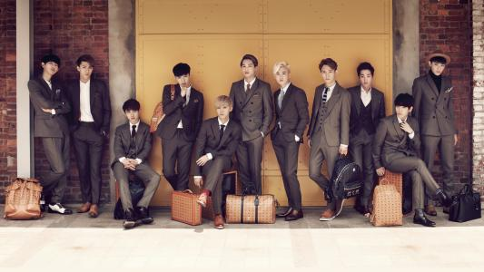
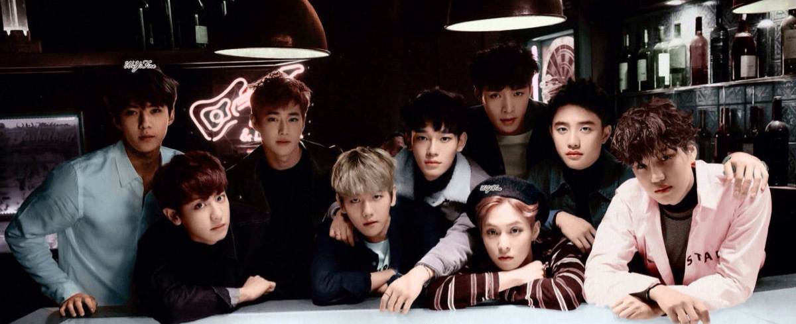

EXO
EXO，是韩国SM娱有限公司于2012年4月8日正式推出的12人男子流行演唱团体，现以金珉锡（XIUMIN）、金俊勉（SUHO）、张艺兴（LAY）、边伯贤（BAEKHYUN）、金钟大（CHEN）、朴灿烈（CHANYEOL）、都暻秀（D.O.）、金钟仁（KAI）、吴世勋（SEHUN）9名成员的形式展开活动。
EXO这个名字从意为太阳系以外的外部行星EXO PLANET一词中得来，蕴含了他们是从未知的世界来的新星之意。在EXO后添加代表Korean（韩语）的K与代表Mandarin（中文）的M，组成EXO-K和EXO-M两个小组，分别在韩国和中国展开活动。
2012年4月8日，推出首张迷你专辑《MAMA》正式出道， 凭借该专辑获得2012亚洲音乐盛典最佳亚洲新人团体奖。2013年6月3日，发行首张正规专辑《XOXO（Kiss&Hug）》；同年，首张正规专辑后续主打曲《咆哮(Growl)》被美国Billboard榜单选为2013最佳K-Pop音乐；12月9日，发行首张冬日专辑《12月的奇迹》。2014年5月7日，发行第二张迷你专辑《Overdose》。2015年3月30日，发行第二张正规专辑《EXODUS》；6月3日，发行正规二辑改版专辑《LOVE ME RIGHT》。12月10日，发行第二张冬日特别专辑《SING FOR YOU》。2016年6月9日，发行第三张正规专辑《EX'ACT》 ；8月18日，发行正规三辑改版专辑《LOTTO》；12月18日，发行第三张冬季特别专辑《FOR LIFE》。2017年7月18日，发行第四张正规专辑《THE WAR》。12月21日，发行第四张冬日特别专辑《Universe》。2018年1月31日发布第一张日本正规专辑《COUNTDOWN》。2018年11月 2日携第五张专辑《Don't Mess Up My Tempo》回归，12月14日携手五专后续《Love shot》再次回归舞台。

| 外文名 | EXO、엑소 | 主要成就: |
| 国籍 | 韩国、中国 | 受邀担任2018平昌冬奥会闭幕式表演嘉宾 |
| 职业 | 歌手、演员 | 史上最初获韩国官方推出纪念奖牌的组合 |
| 经济公司 | 韩国SM娱乐有限公司 | 2018年12月20日获得第一届KMPA人气奖 |
| 代表作品 | 咆哮、TEMPO、MAMA、十二月的奇迹、狼与美女、上瘾 | 分队:EXO、EXO-M、EXO-K、EXO-CBX |
| 主要成就 | 2012年MAMA最佳亚洲新人团体 | 出道日期:2012年4月8日 |
| 粉丝名:EXO-L、行星饭、爱丽 | ||
| 应援色:银白色 |
社会活动
2014年1月9日，EXO-K成员成为红十字会宣传大使，出席RCY公益活动，并亲手烤饼干、面包，传递爱与希望。
2015年12月，EXO将第二张冬季特别专辑《Sing For You(为你而唱)》的部分收益捐赠给慈善组织“SMile for U”，支援亚洲儿童们的音乐教育事业。
2016年9月，EXO成为斯凯奇亚太地区品牌形象代言人，团队成员会在亚太各地陆续进行宣传活动。
2017年12月14日，EXO小分队EXO-CBX随韩总统文在寅出席在北京举办的中韩经贸合作交流会开幕仪式。
2018年1月16日，受邀出席在迪拜阿玛尼酒店举行的首支K-pop歌曲迪拜音乐喷泉(The Dubai Fountain)选曲及首次喷泉秀公开纪念记者招待会，观看以热门歌曲《Power》为背景音乐的迪拜音乐喷泉秀。
2018年2月5日，EXO成员边伯贤亮相第132届IOC大会开幕仪式，并领唱韩国国歌。
2018年2月25日，亮相2018年平昌冬奥会闭幕式，带来精彩的歌舞表演。
2018年，EXO成员张艺兴受邀担任2018-2019年度格莱美音乐节中国官方唯一宣传大使。